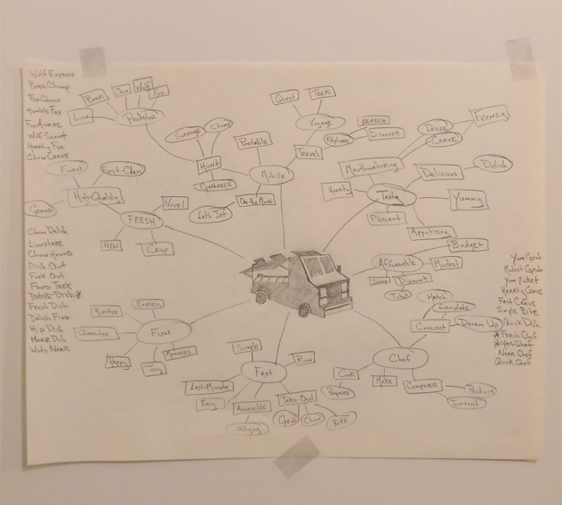
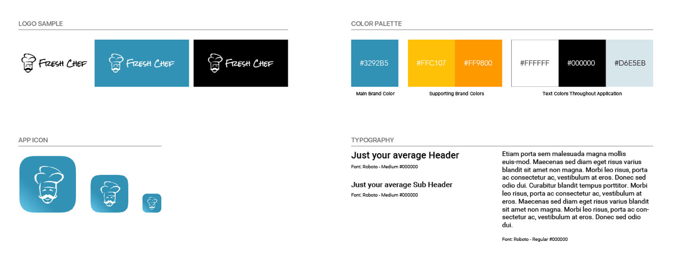
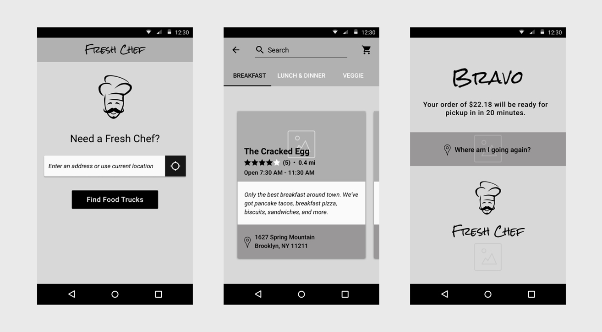
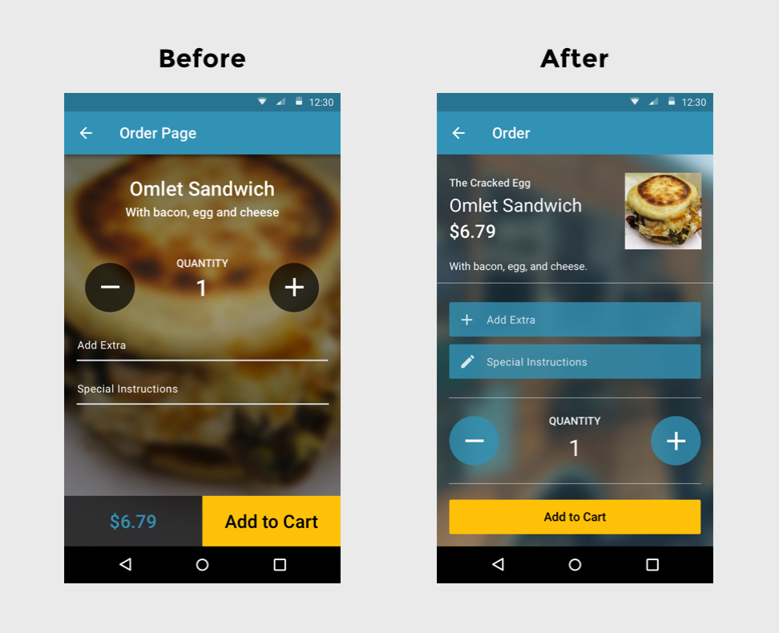
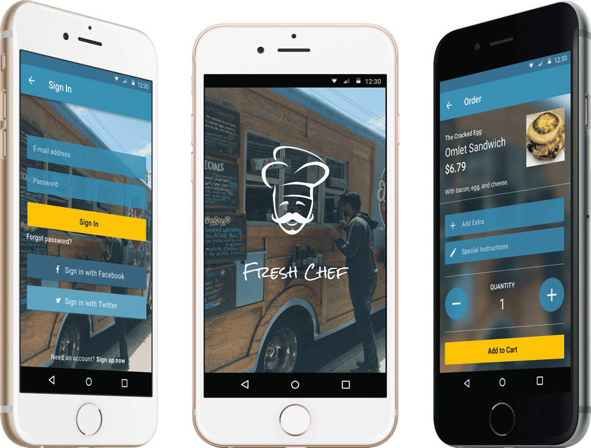

Branding
If you can craft a recognizable brand then you’ve got the perfect foundation for product development. The characteristics I wanted to emit needed to match the personas I created which happened to fall along the lines of freshness, tasty, and fast.
First, I wrecked my brain to find the perfect name.

Once, I settled on Fresh Chef it was easy for me to decide what direction I wanted to go towards for the color palette and logo design. The logo itself was symbolic of the application’s name making it easy for any user to associate it with the brand. I wanted to make sure that users could feel comfortable and relaxed as they placed their orders. Therefore, I decided to go with colors that could represent both a sense of joy and refreshment. For typography I elected to go with Roboto since that has been the standard typeface on Android.

Wireframes
After sketching my way to an appropriate brand logo I learned quickly that pencil and a canvas to brainstorm on is the birth of a designer’s masterpiece. Ernest Hemingway put it well when he said, “There is nothing to writing. All you do is sit down at a typewriter and bleed.” Make no mistake about it, as a designer all you do is sit down with your choice of canvas and bleed.
Initially I figured I would draw out some schematic wireframes and quickly move on, but as I did I couldn’t help myself in designing beyond simple drawings. In order to save time I slipped right into Sketch’s software and continued the wireframing process to support my ideation craze.

Mockups
Wireframing in Sketch proved beneficial as it propelled me quickly into the mockup phase. With most of the pattern work done in Sketch I was able to focus more on the typography and visual aspect moving forward.
Since I was designing for Android I made it priority to always design within the Material Design guidelines. Cards quickly became a pattern I fell in love with as I saw their potential to serve as an entry point to more detailed information. Their utilization emitted a sense of clarity and cleanliness that could bring forward the easy use of the application.
Informed Iteration
I’ve used online usability testing resources before, but there’s nothing quite like asking real people. I conducted some preliminary user testing to get an understanding of how users were acting within certain portions of the application. With just a brief summarization, I tested various scenarios to see what areas users were struggling with.
From my testing, I found that users had issues with:
- Understanding how to read the menu cards
- Visibility of the item they were purchasing on the menu page
- Input fields on order page
As a result, the following changes were made:
The page needed a redesign. Instead of having the user scroll through large blocks of menu content, the small menu cards replaced the old. This outcome was more clear and easy to quickly absorb.

Two items needed to be reworked here. The input fields needed to be consistent throughout the application and the menu item needed to be simplified. In order to accommodate the latter, I used the application’s theme picture to act as the background and modified the location of the menu item to a place where users can easily be reminded what they are ordering.
Prototype
I used InVision to make an interactive prototype for usability testing during the mockup stage. Below is a link of the final version that includes all improvements that were made after user feedback.
